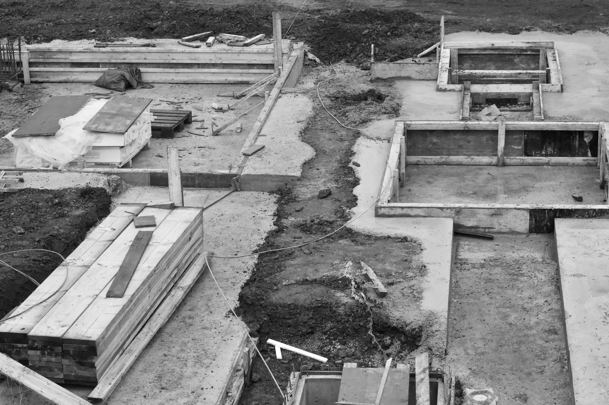

Performance is built before it is seen.
The performance of a residential building is established through a sequence of coordinated engineering decisions — from ground investigation and structural analysis to reinforcement detailing, concrete execution, waterproofing, building-envelope continuity and services coordination.
Nova approaches construction as an integrated engineering process in which design intent, material performance and site execution must remain consistent from calculation to completion.
The structural system is developed as a complete load path rather than as a collection of independent elements. Gravity actions, seismic effects and compatibility between foundations, vertical elements and floor diaphragms are evaluated within the same analytical model.
No structural system is selected by template. Ground conditions, building geometry, architectural organisation and seismic performance requirements determine the system adopted for each project.
Structural response is a system property.
For projects in Istanbul, seismic actions form a fundamental design condition from the earliest stages of structural development. Structural analysis is carried out using the seismic design framework established by the Türkiye Bina Deprem Yönetmeliği 2018 and site-specific hazard parameters obtained through the Türkiye Deprem Tehlike Haritası.
The purpose of seismic design is not to make a single column, wall or beam independently “strong”. Global behaviour is governed by the interaction between mass, stiffness, strength, ductility, geometry, foundation conditions and the distribution of lateral-resisting elements throughout the building.
Analytical model of mass, stiffness and geometry before lateral action is applied.
Seismic action derived from site hazard parameters and the adopted design system.
Analytical displacement distribution over the height of the structure.
Relative lateral displacement between consecutive floors, evaluated against design limits.
Actions transferred through the foundation into the supporting ground.
Ground-motion parameters applicable to the project location.
Geotechnical parameters and local soil behaviour relevant to structural design.
Distribution of seismic mass through the building height and plan.
Relative stiffness of structural elements governing deformation and force distribution.
Relationship between mass distribution and structural stiffness in plan.
Ability of designated structural mechanisms to sustain inelastic deformation in accordance with the adopted design system.
Relative lateral displacement between consecutive floors, controlled within applicable design limits.
Transfer of structural actions into the supporting foundation and ground system.
Foundation design begins with the geotechnical model of the site. Soil stratification, groundwater conditions, excavation geometry and engineering parameters obtained from ground investigation influence the foundation solution and below-ground construction strategy.
Structural loads and geotechnical response are therefore considered as connected design problems rather than independent disciplines.
Site access, ground-level geometry and the interface between landscape, structure and adjoining conditions are established from survey and planning constraints.
Below-ground levels are organised around parking, plant, circulation and shaft geometry. Their number and depth follow the approved project, not a standard configuration.

Excavation support is selected according to excavation geometry, ground conditions, groundwater and adjacent structures. It is an engineered temporary and permanent works problem, not a formality.
Foundation geometry and stiffness follow from structural demand and geotechnical parameters. Load transfer, settlement behaviour and interaction with the retaining system are assessed together.

Stratification and engineering parameters are taken from the geotechnical investigation for the site. Layer sequence and properties differ between developments and are never assumed.
Ground investigation extends to the depth required for the structural and geotechnical assessment of the specific project. Reported parameters govern design; they are not transferable between sites.

Depths, strata, groundwater conditions and foundation systems are project specific and defined by the geotechnical and structural documentation for each development.
Specified compressive strength is only one parameter governing reinforced-concrete performance. The completed element is also affected by concrete composition, production conformity, workability, transportation time, placement sequence, compaction, curing, reinforcement congestion, concrete cover and environmental exposure.
Concrete must therefore be considered as both a designed material and an executed construction process.
Concrete requirements are defined according to structural design, exposure conditions and applicable standards.
Production consistency and conformity are controlled under the applicable concrete specification framework.
Concrete characteristics at delivery must remain compatible with the specified placement requirements.
Concrete is placed using a sequence appropriate to element geometry and reinforcement density.
Mechanical compaction reduces entrapped air and assists complete encapsulation of reinforcement without inducing segregation.
Early-age moisture and temperature conditions are controlled to support hydration, strength development and durability.
Completed elements are inspected for execution quality and conformity with the intended geometry and detailing.

Concrete specification, production and conformity are governed through TS EN 206 together with the applicable complementary national requirements. Project-specific structural documents define the required concrete class and execution criteria.
Reinforcement detailing converts analytical force demand into a buildable structural system. Bar diameter alone does not define reinforcement performance; continuity, anchorage, development length, lap locations, confinement, spacing, concrete cover and constructability must work together.
Reinforcement paths are detailed to maintain the intended transfer of internal forces between adjoining structural regions.
Bars require adequate anchorage so that calculated forces can be transferred between reinforcement and surrounding concrete.
Splices are positioned and detailed according to structural demand and the applicable design requirements.
Transverse reinforcement controls concrete confinement and contributes to shear resistance and ductile structural behaviour in designated regions.
Clear spacing must permit correct placement and compaction of concrete while maintaining the reinforcement arrangement required by design.
Cover separates reinforcement from the exposed surface and contributes to durability, fire performance and bond behaviour.
Model shown for explanation of detailing principles. Bar diameters, spacing, lap lengths and cover are defined exclusively by project structural documentation.
Quality assurance is most effective before work becomes concealed. Inspection therefore follows the construction sequence, with control points established before, during and after critical operations.
Waterproofing performance depends on continuity across surfaces, junctions, penetrations and changes in geometry. A membrane with high material performance cannot compensate for an unresolved termination or discontinuous interface.
Below-grade walls, foundations, roofs, terraces, balconies and wet areas therefore require coordinated detailing of membrane continuity, drainage, thresholds, penetrations and construction joints.
Membrane continuity begins below the structure, including the interface with the retaining system.
Buried walls are treated as a continuous surface, with construction joints resolved as part of the system.
Above-grade transitions, fixings and penetrations must not interrupt the boundary.
Falls, upstands, thresholds and drainage are coordinated with the interior floor build-up.
The boundary closes at roof level, completing an uninterrupted envelope around the building.
Discontinuity at junction — detail unresolved
Design and application must comply with the applicable requirements of the Binalarda Su Yalıtımı Yönetmeliği and the project-specific waterproofing system.
The building envelope controls the exchange of heat, moisture, air, sound and solar energy between interior and exterior conditions. Its performance depends not only on individual products but on the continuity of the complete assembly.
Insulation strategy is coordinated to minimise unintended thermal discontinuities at junctions.
Waterproofing, drainage and vapour behaviour are evaluated as part of the complete wall or roof build-up.
Connections between structure, façade systems, glazing, thresholds and penetrations are treated as critical detailing zones.
Glass and framing performance are selected according to project-specific architectural, thermal, acoustic and environmental requirements.
Exposure, material compatibility, drainage and maintenance access influence long-term envelope performance.
Materials, thicknesses and performance values are defined by project-specific specifications together with the applicable requirements of the Binalarda Enerji Performansı Yönetmeliği and construction-product performance legislation.
Residential acoustic performance is determined by complete construction assemblies rather than individual materials. Wall and floor build-ups, junctions, façade openings, service penetrations and mechanical equipment all affect airborne, impact and structure-borne sound transmission.
Acoustic design must therefore be coordinated between architecture, building services and construction detailing.
Speech and media transmitted through air and through the separating assembly.
Footfall and impacts transmitted through floor build-ups and junctions.
Vibration transmitted through the structural system itself.
Equipment, ducts, risers and drainage routed close to living spaces.
Requirements follow the Binaların Gürültüye Karşı Korunması Hakkında Yönetmelik. Performance values are properties of the executed assembly and are defined by project-specific acoustic documentation.
Mechanical, electrical and plumbing systems are spatial systems. Their routes, shafts, access zones, penetrations and equipment requirements must therefore be coordinated with architectural planning and structural design before construction.
Late coordination creates unnecessary penetrations, reduced serviceability and conflicts between disciplines. Early coordination preserves both technical performance and architectural intent.

Shaft geometry, access zones and penetration positions are fixed early so that structural elements, fire compartmentation and architectural layouts remain consistent with the installed systems.
Project design and construction are developed within the regulatory and technical framework applicable in Türkiye. The governing requirements depend on project type, approval date, site conditions and project-specific documentation.
The latest applicable editions, amendments and project-specific approval requirements must be verified by the relevant design and engineering disciplines for each development.

A completed residence is the visible result of thousands of decisions that are no longer visible after handover. Structural analysis, detailing, material selection, construction sequence and inspection must remain coordinated throughout the process for the building to perform as designed.